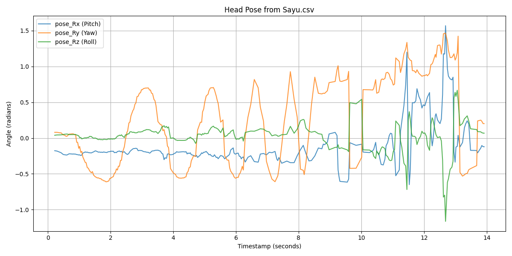
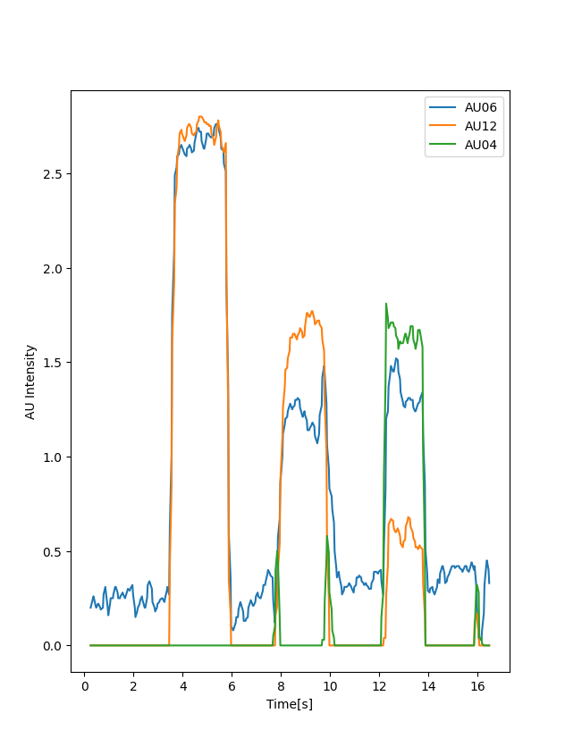
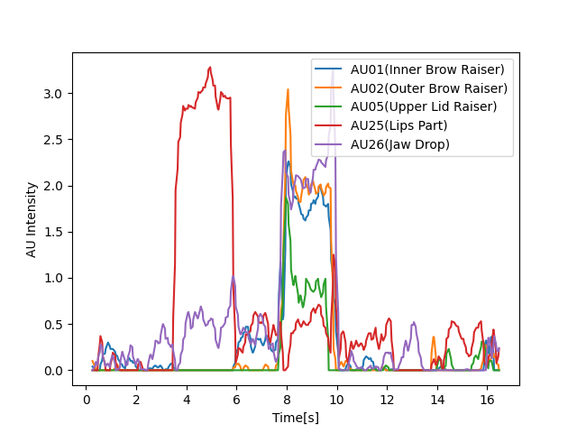
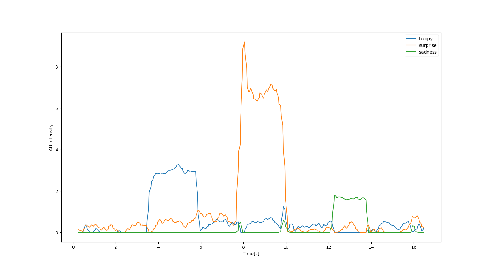
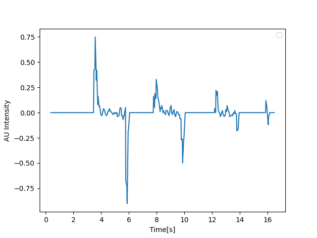
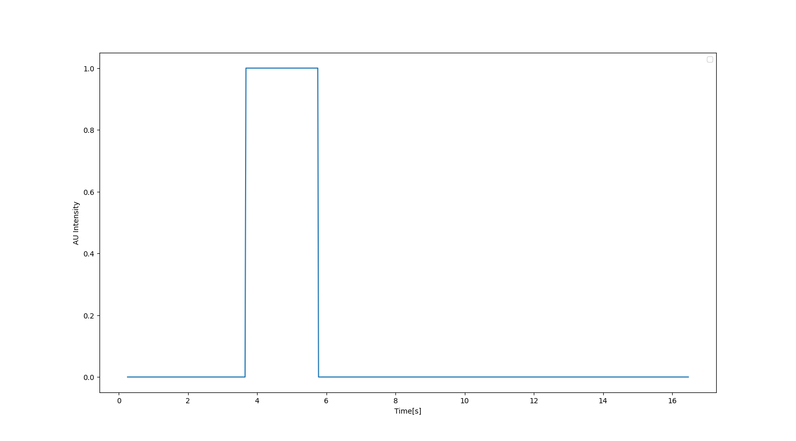
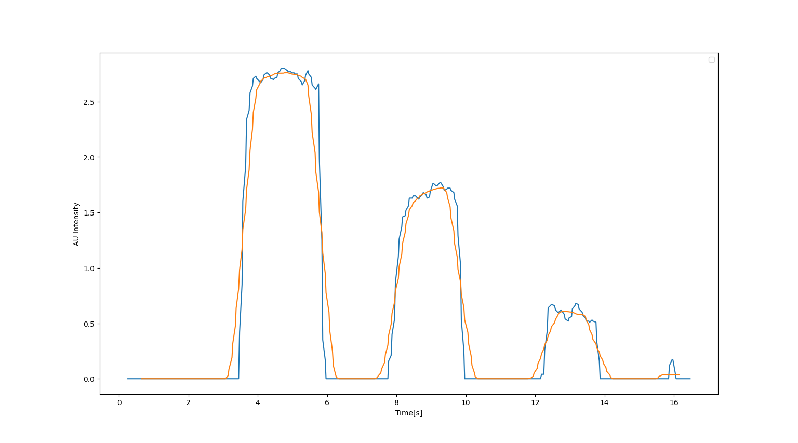
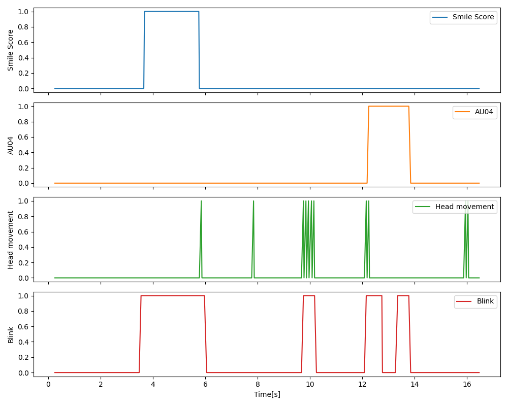
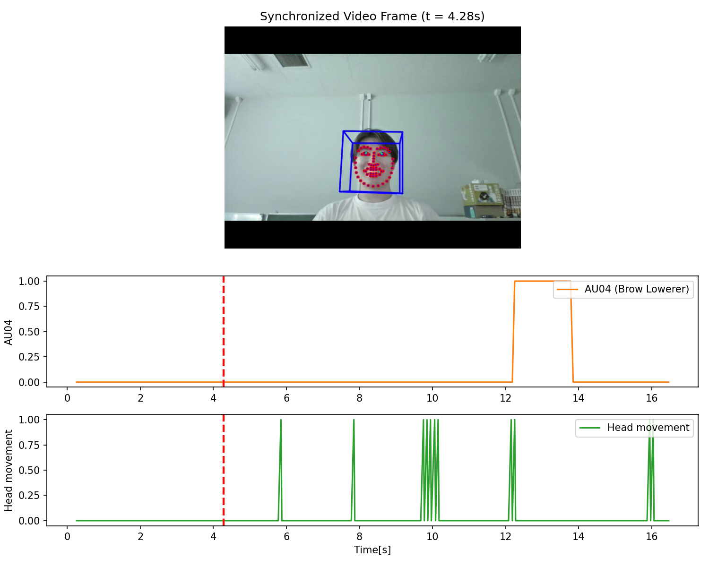

〜 テキスト第1回〜第3回課題の実装完了と独自発展システムの開発報告 〜
シラバス全4回に対する我々の実作業（Day 1・Day 2）での前倒し達成対比
顔を「データ」として測る
plot_sayu.py / Sayu_pose.png表情を数値として測る
2-2.py, 2-3.py, 2-kadai.py時間変化から情動を読む + 独自発展
3-hukusen.py)3-WB.py)動画中の頭部運動（左右・上下・傾き）を客観的な角度（rad）データとして抽出
Sayu.csv (頭部運動動画のOpenFace解析結果)pose_Rx (Pitch: 上下), pose_Ry (Yaw: 左右), pose_Rz (Roll: 傾き)pose_Ry が明瞭に±0.5 rad以上の振れ幅を記録。
FACS（顔面動作符号化システム）に基づく微小筋肉運動の強度定量化

驚き(Surprise)の複数AU連動解析と、独自感情スコア（Happy, Sadness等）の設計
内側/外側眉上げ(AU01,02)、上まぶた上げ(AU05)、開口(AU25,26)の共起を検証。


静止画的特徴から動画時系列へ：急峻な変化点の抽出としきい値による離散イベント化
「値の高さ」だけでなく、表情が動き出した「立ち上がり（モーメント）」を df["AU12_r"].diff() で抽出。

連続値を0/1のイベント生起系列として扱うことで、開始・終了時刻や継続時間を自動計算可能に。

トラッキングの微小振動を除去し、本質的な情動ダイナミクスを抽出

テキスト第3コマの到達目標：複数指標（表情・頭部・まばたき）の多段同期プロット
(AU12_r > 2) → 笑顔生起イベント(AU04_r > 1) → 眉間の緊張・集中・困惑(pose_Rz.diff() < -0.005) → 首の急峻な傾き(AU45_c > 0) → まばたき検出パルス
テキストの構想をさらに発展：OpenCVとMatplotlibのアニメーションによる完全同期可視化
cv2.VideoCapture + matplotlib.animation.FuncAnimationaxvline）が時系列上を追従。
第4回に向けた挑戦：マルチモーダル特徴量による『嘘発見器』の精度向上とアプリ開発
diff() で捕捉3-WB.py の同期技術を発展させ、Webカメラから「嘘らしさスコア(Deception Index)」をリアルタイム判定・描画するGUIアプリを実装